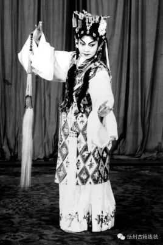

陈书舫
陈书舫，女，川剧著名表演艺术家，出生于1924年，直隶束鹿（今河北辛集）人。她与豫剧大师陈素真、汉剧大师陈伯华并称为戏曲界“陈姓鼎足之势”。
出身京剧世家。她从小随都是京剧演员父母学唱京剧，7岁改学川剧，工闺门旦（旦脚），曾拜名家阳友鹤为师。13岁入成都三庆会，在成都、重庆、乐山、泸州、内江等地演出。1956年加入中国共产党。新中国成立后，先后在成都川剧院、四川省川剧院任主演。建国后，历任四川省川剧院院长，四川省川剧艺术研究所所长，四川省川剧学校校长，中国文联第三、四届委员，中国剧协第三、四届常务理事。是第二至六届全国人大代表。陈书舫嗓音甜润，唱腔委婉，表演细腻，善于抒发人物的思想感情。1952年获第一届全国戏曲观摩演出演员一等奖。
唱腔特点
陈书舫的嗓音纯美清亮．堂音共鸣好，但她从不单纯追求声音好听，而是特别注重表达人物的思想感情。她常说：“唱戏要唱出人物，唱出感情。”为了把人物内心世界开拓得更加深刻，哪怕一字一句，她也总是从人物出发，从感情入手，力求达到以声传情，以情动人的艺术境界。
演出生涯
17岁起，她在《情探》中反串王魁，在《赏夏》中反串蔡伯喈，在《踏伞》中反串蒋世隆。与次同时主演了《空城计》（饰诸葛亮）、《长生殿》（饰李隆基）等生角戏；和《檄文诏》（饰嬴政）、《霸王别姬》（饰项羽）等净角戏；甚至在《西关渡》（饰陈彩）、《补缸》（补缸匠）中模仿名丑龚吉升的诙谐表演，惟妙惟肖，饶有兴趣。 一个川剧演员，何况是个年轻的女川剧演员，不仅擅于“五声共和”，唱彻昆高胡弹灯，更兼“五艺俱全”，演遍生旦净末丑，在川剧史上恐怕也属罕见。 在山城重庆3年期间相继在《人生何处不相逢》、《天字第一号》、《啼笑姻缘》、《夜半的悲哀》等时装戏；以及在《茶花女》等外国名剧中担任主角。甚至是一人双饰，给人留下了深刻的印象。1948年，在〈春风报〉主办的由观众直接参与投票的“川剧皇后”中，众望所归，独领风骚。陈书舫在64年的舞台生涯中，演出的大小剧目有150多个。1959年，随中国川剧团出访欧洲演出〈秋江〉深受外国友人的喜爱。成功的塑造了〈柳荫记〉中的祝英台、〈丁佑君〉中丁佑君，等许多人物形象，她的表演已臻炉火纯青的地步。